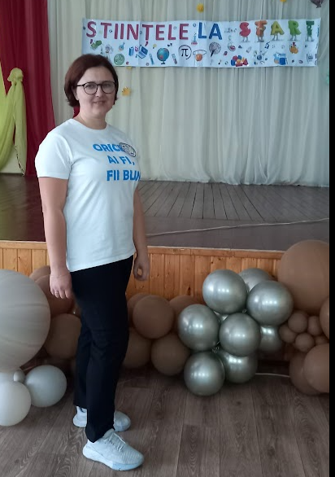
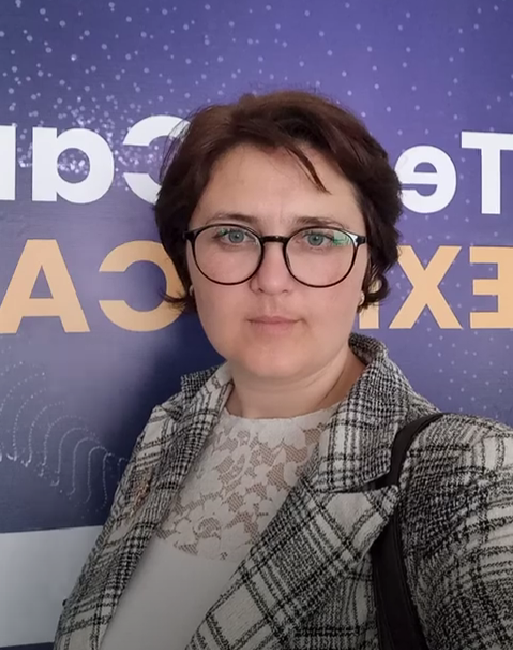
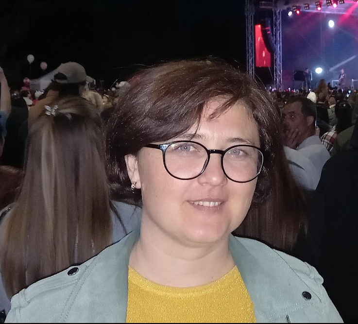
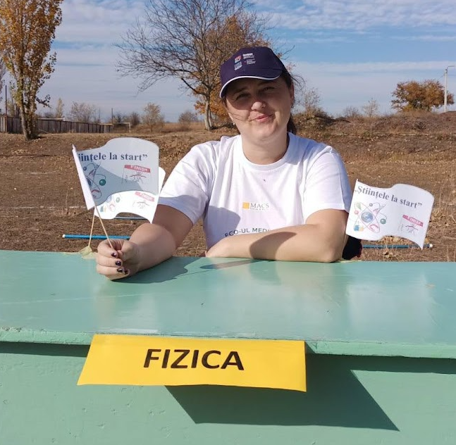

Profir Iulia
|
Profesor de fizică, informatică
Româna, Rusa, Găgăuza, Engleza +373 273 2 25 35 profiriulika@gmail.com |
Sunt profesoară de fizică și informatică. Cunosc diferite metode de predare. Cel mai mult mă bazez în predarea metodelor diferite a rezolvării problemelor de fizică. Programarea tot este una din pasiunile mele și cu plăcere studiez Proiectarea și programare WEB. |
|  |  |  |  |
Experiența de lucru
Profesor școlar
Septembrie 2019 - PrezentActivez ca profesor de fizică și informatică în IPG ”Mihai Eeminescu”
Profesor școlar
Septembrie 2020 - PrezentPredau discipline opționale: Design grafic și Programare și dezvoltare WEB în IPG ”Mihai Eeminescu”